에너지관리기사 (2019-03-03 기출문제)
1과목: 연소공학
1. 중유의 탄수소비가 증가함에 따른 발열량의 변화는?
- 무관하다.
- 증가한다.
- 감소한다.
- 초기에는 증가하다가 점차 감소한다.
(정답률: 68%)

2. 통풍방식 중 평형통풍에 대한 설명으로 틀린 것은?
- 통풍력이 커서 소음이 심하다.
- 안정한 연소를 유지할 수 있다.
- 노내 정압을 임의로 조절할 수 있다.
- 중형 이상의 보일러에는 사용할 수 없다.
(정답률: 76%)
3. 다음 조성의 액체연료를 완전 연소시키기 위해 필요한 이론공기량은 약 몇 Sm3/kg인가?
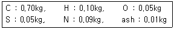
- 8.9
- 11.5
- 15.7
- 18.9
(정답률: 54%)
4. 목탄이나 코크스 등 휘발분이 없는 고체연료에서 일어나는 일반적인 연소형태는?
- 표면연소
- 분해연소
- 증발연소
- 확산연소
(정답률: 74%)
5. 다음 기체연료 중 고위발열량(MJ/Sm3)이 가장 큰 것은?
- 고로가스
- 천연가스
- 석탄가스
- 수성가스
(정답률: 81%)
6. 기체연료가 다른 연료에 비하여 연소용 공기가 적게 소요되는 가장 큰 이유는?
- 확산연소가 되므로
- 인화가 용이하므로
- 열전도도가 크므로
- 착화온도가 낮으므로
(정답률: 80%)
7. 증기의 성질에 대한 설명으로 틀린 것은?
- 증기의 압력이 높아지면 증발열이 커진다.
- 증기의 압력이 높아지면 비체적이 감소한다.
- 증기의 압력이 높아지면 엔탈피가 커진다.
- 증기의 압력이 높아지면 포화온도가 높아진다.
(정답률: 42%)
8. 다음 연료의 발열량을 측정하는 방법으로 가장 거리가 먼 것은?
- 열량계에 의한 방법
- 연소방식에 의한 방법
- 공업분석에 의한 방법
- 원소분석에 의한 방법
(정답률: 54%)
9. 댐퍼를 설치하는 목적으로 가장 거리가 먼 것은?
- 통풍력을 조절한다.
- 가스의 흐름을 조절한다.
- 가스가 새어나가는 것을 방지한다.
- 덕트 내 흐르는 공기 등의 양을 제어한다.
(정답률: 67%)
10. 다음 중 중유의 착화온도(℃)로 가장 적합한 것은?
- 250~300
- 325~400
- 400~440
- 530~580
(정답률: 52%)
11. 고체 및 액체연료의 발열량을 측정할 때 정압 열량계가 주로 사용된다. 이 열량계 중에 2L의 물이 있는데 5g의 시료를 연소시킨 결과 물의 온도가 20℃ 상승하였다. 이 열량계의 열손실률을 10%라고 가정할 때, 발열량은 약 몇 cal/g인가?
- 4,800
- 6,800
- 8,800
- 10,800
(정답률: 51%)
12. 99% 집진을 요구하는 어느 공장에서 70% 효율을 가진 전처리 장치를 이미 설치하였다. 주처리 장치는 약 몇 %의 효율을 가진 것이어야 하는가?
- 98.7
- 96.7
- 94.7
- 92.7
(정답률: 61%)
13. 저탄장 바닥의 구배와 실외에서의 탄층높이로 가장 적절한 것은?
- 구배 : 1/50 ~ 1/100, 높이 : 2m 이하
- 구배 : 1/100 ~ 1/150, 높이 : 4m 이하
- 구배 : 1/150 ~ 1/200, 높이 : 2m 이하
- 구배 : 1/200 ~ 1/250, 높이 : 4m 이하
(정답률: 69%)
14. 위험성을 나타내는 성질에 관한 설명으로 옳지 않은 것은?
- 착화온도와 위험성은 반비례한다.
- 비등점이 낮으면 인화 위험성이 높아진다.
- 인화점이 낮은 연료는 대체로 착화온도가 낮다.
- 물과 혼합하기 쉬운 가연성 액체는 물과의 혼합에 의해 증기압이 높아져 인화점이 낮아진다.
(정답률: 60%)
15. 보일러의 열효율[η] 계산식으로 옳은 것은? (단, hs:발생증기, hw:급수의 엔탈피, Ga:발생증기량, Gf:연료소비량,Hl:저위발열량이다.)
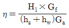
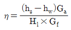
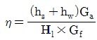
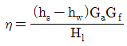
(정답률: 63%)
16. 질량 기준으로 C 85%, H 12%, S 3%의 조성으로 되어 있는 증유를 공기비 1.1로 연소시킬 때 건연소가스양은 약 몇 Nm3/kg인가?
- 9.7
- 10.5
- 11.3
- 12.1
(정답률: 35%)
17. 공기와 연료의 혼합기체의 표시에 대한 설명 중 옳은 것은?
- 공기비는 연공비의 역수와 같다.
- 연공비(fuel air ratio)라 함은 가연 혼합기 중의 공기와 연료의 질량비로 정의된다.
- 공연비(air fual ratio)라 함은 가연 혼합기 중의 연료와 공기의 질량비로 정의된다.
- 당량비(equivalence ratio)는 실제연공비와 이론연공비의 비로 정의된다.
(정답률: 71%)
18. 석탄에 함유되어 있는 성분 중 ㉠수분, ㉡휘발분, ㉢황분이 연소에 미치는 영향으로 가장 적합하게 각각 나열한 것은?
- ㉠발열량 감소 ㉡연소 시 긴 불꽃 생성 ㉢연소기관의 부식
- ㉠매연발생 ㉡대기오염 감소 ㉢착화 및 연소방해
- ㉠연소방해 ㉡발열량 감소 ㉢매연발생
- ㉠매연발생 ㉡발열량 감소 ㉢점화방해
(정답률: 73%)
19. 배기가스와 외기의 평균온도가 220℃와 25℃이고, 0℃, 1기압에서 배기가스와 대기의 밀도는 각각 0.770kg/m3와 1.186kg/m3일 때 연돌의 높이는 약 몇 m인가? (단, 연돌의 통풍력 Z=52.85mmH2O이다.)
- 60
- 80
- 100
- 120
(정답률: 48%)
20. 그림은 어떤 로의 열정산도이다. 발열량이 2,000kcal/Nm3인 연료를 이 가열로에서 연소시켰을 때 강재가 함유하는 열량은 약 몇 Kcal/Nm3인가?
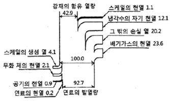
- 259.75
- 592.25
- 867.43
- 925.57
(정답률: 42%)
2과목: 열역학
21. 물체의 온도 변화 없이 상(phase, 相) 변화를 일으키는 데 필요한 열량은?
- 비열
- 점화열
- 잠열
- 반응열
(정답률: 73%)
22. 열역학 2법칙과 관련하여 가역 또는 비가역 사이클 과정 중 항상 성립하는 것은? (단, Q는 시스템에 출입하는 열량이고, T는 절대온도이다.)
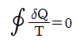
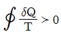
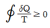
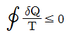
(정답률: 55%)
23. 어느 밀폐계와 주위 사이에 열의 출입이 있다. 이것으로 인한 계와 주위의 엔트로피의 변화량을 각각 △S1, △S2로 하면 엔트로피 증가의 원리를 나타내는 식으로 옳은 것은?
- △S1＞0
- △S2＞0
- △S1+△S2＞0
- △S1-△S2＞0
(정답률: 71%)
24. 100kPa의 포화액이 펌프를 통과하여 1,000kPa까지 단열압축된다. 이 때 필요한 펌프의 단위 질량당 일은 약 몇 kJ/kg인가? (단, 포화액의 비체적은 0.001m3/kg으로 일정하다.)
- 0.9
- 1.0
- 900
- 1,000
(정답률: 46%)
25. 다음 중 랭킨 사이클의 과정을 옳게 나타낸 것은?
- 단열압축→정적가열→단열팽창→정압냉각
- 단열압축→정압가열→단열팽창→정적냉각
- 단열압축→정압가열→단열팽창→정압냉각
- 단열압축→정적가열→단열팽창→정적냉각
(정답률: 62%)
26. 냉동사이클에서 냉매의 구비조건으로 가장 거리가 먼 것은?
- 임계온도가 높을 것
- 증발열이 클 것
- 인화 및 폭발의 위험성이 낮을 것
- 저온, 저압에서 응축이 잘 되지 않을 것
(정답률: 66%)
27. 어떤 열기관이 역카르노 사이클로 운전하는 열펌프와 냉동기로 작동될 수 있다. 동일한 고온열원과 저온열원 사이에서 작동될 때, 열펌프와 냉동기의 성능계수(COP)는 다음과 같은 관계식으로 표시될 수 있는데, ( )안에 알맞은 값은?
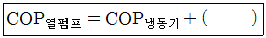
- 0
- 1
- 1.5
- 2
(정답률: 75%)
28. -50℃인 탄산가스가 있다. 이 가스가 정압과정으로 0℃가 되었을 때 변경 후의 체적은 변경 전의 체적 대비 약 몇 배가 되는가? (단, 탄산가스는 이상기체로 간주한다.)
- 1.094배
- 1.224배
- 1.375배
- 1.512배
(정답률: 63%)
29. 물 1kg이 100℃의 포화액 상태로부터 동일 압력에서 100℃의 건포화증기로 증발할 때 까지 2,280kJ을 흡수하였다. 이 때 엔트로피의 증가는 약 몇 kJ/K인가?
- 6.1
- 12.3
- 18.4
- 25.6
(정답률: 41%)
30. 이상기체에서 정적비열 Cv와 정압비열 Cp와의 관계를 나타낸 것으로 옳은 것은? (단, R은 기체상수이고, k는 비열비이다.)
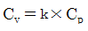
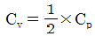
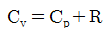
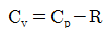
(정답률: 63%)
31. 랭킹사이클의 열효율 증대 방안으로 가장 거리가 먼 것은?
- 복수기의 압력을 낮춘다.
- 과열 증기의 온도를 높인다.
- 보일러의 압력을 상승시킨다.
- 응축기의 온도를 높인다.
(정답률: 50%)
32. 압력이 1.2MPa이고 건도가 0.65인 습증기 10m3의 질량은 약 몇 kg인가? (단, 1.2MPa에서 포화액과 포화증기의 비체적은 각각 0.0011373m3/kg, 0.1662m3/kg이다.)
- 87.83
- 92.23
- 95.11
- 99.45
(정답률: 46%)
33. 비열비가 1.41인 이상기체가 1MPa, 500L에서 가역단열과정으로 120kPa로 변할 때 이 과정에서 한 일은 약 몇 kJ인가?
- 561
- 625
- 715
- 825
(정답률: 25%)
34. 40m3의 실내에 있는 공기의 질량은 약 몇 kg인가? (단, 공기의 압력은 100kPa, 온도는 27℃이며, 공기의 기체상수는 0.287kJ/(kgㆍK)이다.)
- 93
- 46
- 10
- 2
(정답률: 58%)
35. 냉동용량이 6RT(냉동톤)인 냉동기의 성능계수가 2.4이다. 이 냉동기를 작동하는 데 필요한 동력은 약 몇 kW인가? (단, 1RT(냉동톤)은 3.86kW이다.)
- 3.33
- 5.74
- 9.65
- 18.42
(정답률: 58%)
36. 자동차 타이어의 초기 온도와 압력은 각각 15℃, 150kPa이었다. 이 타이어에 공기를 주입하여 타이어 안의 온도가 30℃가 되었다고 하면 타이어의 압력은 약 몇 kPa인가? (단, 타이어 내의 부피는 0.1m3이고, 부피변화는 없다고 가정한다.)
- 158
- 177
- 211
- 233
(정답률: 47%)
37. 노즐에서 가역단열 팽창에서 분출하는 이상기체가 있다고 할 때 노즐 출구에서의 유속에 대한 관계식으로 옳은 것은? (단, 노즐입구에서의 유속은 무시할 수 있을 정도로 작다고 가정하고, 노즐 입구의 단위질량당 엔탈피는 hi, 노즐 출구의 단위질량당 엔탈피는 ho이다.)
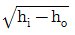
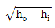
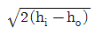
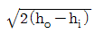
(정답률: 59%)
38. 디젤 사이클에서 압축비는 16, 기체의 비열비는 1.4, 체절비(또는 분사 단절비)는 2.5라고 할 때 이 사이클의 효율은 약 몇 %인가?
- 59%
- 62%
- 65%
- 68%
(정답률: 39%)
39. 다음 중 가스터빈의 사이클로 가장 많이 사용되는 사이클은?
- 오토 사이클
- 디젤 사이클
- 랭킨 사이클
- 브레이턴 사이클
(정답률: 60%)
40. 다음 중 용량성 상태량(extensive property)에 해당하는 것은?
- 엔탈피
- 비체적
- 압력
- 절대온도
(정답률: 57%)
3과목: 계측방법
41. 단요소식 수위제어에 대한 설명으로 옳은 것은?
- 발전용 고압 대용량 보일러의 수위제어에 사용되는 방식이다.
- 보일러의 수위만을 검출하여 급수량을 조절하는 방식이다.
- 부하변동에 의한 수위변화 폭이 대단히 적다.
- 수위조절기의 제어동작은 PID동작이다.
(정답률: 63%)
42. 다음 중 액면 측정방법이 아닌 것은?
- 액압측정식
- 정전용량식
- 박막식
- 부자식
(정답률: 51%)
43. 유로에 고정된 교축기고를 두어 그 전후의 압력차를 측정하여 유량을 구하는 유량계의 형식이 아닌 것은?
- 벤투리미터
- 플로우 노즐
- 로터미터
- 오리피스
(정답률: 73%)
44. 오차와 관련된 설명으로 틀린 것은?
- 흩어짐이 큰 측정을 정밀하다고 한다.
- 오차가 적은 계량기는 정확도가 높다.
- 계측기가 가지고 있는 고유의 오차를 기차라고 한다.
- 눈금을 읽을 때 시선의 방향에 따른 오차를 시차라고 한다.
(정답률: 75%)
45. 측정하고자 하는 액면을 직접 자로 측정, 자의 눈금을 읽음으로서 액면을 측정하는 방법의 액면계는?
- 검척식 액면계
- 기포식 액면계
- 직관식 액면계
- 플로트식 액면계
(정답률: 68%)
46. Thermister(서미스터)의 특징이 아닌 것은?
- 소형이며 응답이 빠르다.
- 온도계수가 금속에 비하여 매우 작다.
- 흡습 등에 의하여 열화되기 쉽다.
- 전기저항체 온도계이다.
(정답률: 58%)
47. 전자유량계로 유량을 측정하기 위해서 직접 계측하는 것은?
- 유체에 생기는 과전류에 의한 온도 상승
- 유체에 생기는 압력 상승
- 유체 내에 생기는 와류
- 유체에 생기는 기전력
(정답률: 68%)
48. 고온물체로부터 방사되는 특정파장을 온도계 속으로 통과시켜 온도계 내의 전구 필라멘트의 휘도를 육안으로 직접 비교하여 온도를 측정하는 것은?
- 열전온도계
- 광고온계
- 색온도계
- 방사온도계
(정답률: 62%)
49. 조절계의 제어작동 중 제어편차에 비례한 제어동작은 잔류편차(offset)가 생가는 결점이 있는데, 이 잔류편차를 없애기 위한 제어동작은?
- 비례동작
- 미분동작
- 2위치동작
- 적분동작
(정답률: 61%)
50. 다이어프램식 압력계의 압력증가 현상에 대한 설명으로 옳은 것은?
- 다이어프램에 가해진 압력에 의해 격막이 팽창한다.
- 링크가 아래 방향으로 회전한다.
- 섹터기어가 시계방향으로 회전한다.
- 피니언은 시계방향으로 회전한다.
(정답률: 59%)
51. 다음 중 직접식 액위계에 해당하는 것은?
- 정전용량식
- 초음파식
- 플로트식
- 방사선식
(정답률: 74%)
52. 램, 실린더, 기름탱크, 가압펌프 등으로 구성되어 있으며 다른 압력계의 기준기로 사용되는 것은?
- 환상스프링식 압력계
- 부르동관식 압력계
- 액주형 압력계
- 분동식 압력계
(정답률: 61%)
53. 2개의 제어계를 조합하여 1차 제어장치의 제어량을 측정하여 제어명령을 발하고 2차 제어장치의 목표치로 설정하는 제어방법은?
- on-off 제어
- cascade 제어
- program 제어
- 수동제어
(정답률: 74%)
54. 다음 중 사용온도 범위가 넓어 저항온도계의 저항체로서 가장 우수한 재질은?
- 백금
- 니켈
- 동
- 철
(정답률: 75%)
55. 다음 중 1,000℃ 이상인 고온체의 연속측정에 가장 적합한 온도계는?
- 저항 온도계
- 방사 온도계
- 바이메탈식 온도계
- 액체압력식 온도계
(정답률: 73%)
56. 응답이 빠르고 감도가 높으며, 도선저항에 의한 오차를 적게 할 수 있으나, 재현성이 없고 흡습 등으로 열화되기 쉬운 특징을 가진 온도계는?
- 광고온계
- 열전대 온도계
- 서미스터 저항체 온도계
- 금속 측온 저항체 온도계
(정답률: 66%)
57. 다음 열전대의 구비조건으로 가장 적절하지 않은 것은?
- 열기전기력이 크고 온도 증가에 따라 연속적으로 상승할 것
- 저항온도 계수가 높을 것
- 열전도율이 작을 것
- 전기저항이 작을 것
(정답률: 37%)
58. 휴대용으로 상온에서 비교적 정도가 좋은 아스만(Asman) 습도계는 다음 중 어디에 속하는가?
- 저항 습도계
- 냉각식 노점계
- 간이 건습구 습도계
- 통풍형 건습구 습도계
(정답률: 60%)
59. 지름이 10cm 되는 관 속을 흐르는 유체의 유속이 16m/s이었다면 유량은 약 몇 m3/s인가?
- 0.125
- 0.525
- 1.6⑤
- 1.725
(정답률: 56%)
60. 환상천평식(링밸런스식) 압력계에 대한 설명으로 옳은 것은?
- 경사관식 압력계의 일종이다.
- 히스테리시스 현상을 이용한 압력계이다.
- 압력에 따른 금속의 신축성을 이용한 것이다.
- 저압가스의 압력측정이나 드래프트게이지로 주로 이용된다.
(정답률: 43%)
4과목: 열설비재료 및 관계법규
61. 다음 중 용광로에 장입되는 물질 중 탈황 및 탈산을 위해 첨가하는 것으로 가장 적당한 것은?
- 철광석
- 망간광석
- 코크스
- 석회석
(정답률: 65%)
62. 다음 보온재 중 최고 안전 사용온도가 가장 낮은 것은?
- 석면
- 규조토
- 우레탄 폼
- 펄라이트
(정답률: 69%)
63. 연소실의 연도를 축조하려 할 때 유의사항으로 가장 거리가 먼 것은?
- 넓거나 좁은 부분의 차이를 줄인다.
- 가스 정체 공극을 만들지 않는다.
- 가능한 한 굴곡 부분을 여러 곳에 설치한다.
- 댐퍼로부터 연도까지의 길이를 짧게 한다.
(정답률: 77%)
64. 에너지이용 합리화법에 따라 검사대상기기에 해당되지 않는 것은?
- 정격용량이 0.4MW인 철금속가열로
- 가스사용량이 18kg/h인 소형온수보일러
- 최고사용압력이 0.1MPa이고, 전열면적이 5m2인 주철제보일러
- 최고사용압력이 0.1MPa이고, 동체의 안지름이 300mm이며, 길이가 600mm인 강철제보일러
(정답률: 34%)
65. 에너지이용 합리화법에 따라 효율관리기자재의 제조업자가 광고매체를 이용하여 효율관리기자재의 광고를 하는 경우에 그 광고내용에 포함시켜야 할 사항은?
- 에너지 최고효율
- 에너지 사용량
- 에너지 소비효율
- 에너지 평균소비량
(정답률: 73%)
66. 에너지이용 합리화법에 의해 에너지사용의 제한 또는 금지에 관한 조정ㆍ명령, 기타 필요한 조치를 위반한 자에 대한 과태료 기준은 얼마인가?
- 50 만원 이하
- 100 만원 이하
- 300 만원 이하
- 500 만원 이하
(정답률: 66%)
67. 보온재의 열전도계수에 대한 설명으로 틀린 것은?
- 보온재의 함수율이 크게 되면 열전도계수도 증가한다.
- 보온재의 기공률이 클수록 열전도계수는 작아진다.
- 보온재의 열전도계수가 작을수록 좋다.
- 보온재의 온도가 상승하면 열전도계수는 감소된다.
(정답률: 56%)
68. 에너지이용 합리화법의 목적이 아닌 것은?
- 에너지의 합리적인 이용을 증진
- 국민경제의 건전한 발전에 이바지
- 지구온난화의 최소화에 이바지
- 신재생에너지의 기술개발에 이바지
(정답률: 66%)
69. 에너지이용 합리화법에 따라 시공업의 기술인력 및 검사대상기기관리자에 대한 교육과 정과 교육기관의 연결로 틀린 것은?
- 난방시공법 제1종기술자 과정 : 1일
- 난방시공업 제2종기술자 과정 : 1일
- 소형보일러ㆍ압력용기관리자 과정 : 1일
- 중ㆍ대형 보일러관리자 과정 : 2일
(정답률: 71%)
70. 에너지 이용 합리화법에 따라 냉난방온도의 제한온도 기준 중 난방온도는 몇 ℃ 이하로 정해져 있는가?
- 18
- 20
- 22
- 26
(정답률: 61%)
71. 버터플라이 밸브의 특징에 대한 설명으로 틀린 것은?
- 90°회전으로 개폐가 가능하다.
- 유량조절이 가능하다.
- 완전 열림시 유체저항이 크다.
- 밸브몸통 내에서 밸브대를 축으로 하여 원판형태의 디스트의 움직임으로 개폐하는 밸브이다.
(정답률: 63%)
72. 에너지이용 합리화법에 따라 검사대상기기의 검사유효기간 기준으로 틀린 것은?
- 검사유효기간은 검사에 합격한 날의 다음 날부터 계산한다.
- 검사에 합격한 날이 검사유효기간 만료일 이전 60일 이내인 경우 검사유효기간 만료일의 다음 날부터 계산한다.
- 검사를 연기한 경우의 검사유효기간은 검사유효기간 만료일의 다음 날부터 계산한다.
- 산업통상자원부장관은 검사대상기기의 안전관리 또는 에너지효율 향상을 위하여 부득이하다고 인정할 때에는 검사유효기간을 조정할 수 있다.
(정답률: 64%)
73. 마그네시아 또는 돌로마이트를 원료로 하는 내화물이 수증기의 작용을 받아 Ca(OH)2나 Mg(OH)2를 생성하게 된다. 이때 체적변화로 인해 노벽에 균열이 발생하거나 붕괴하는 현상을 무엇이라고 하는가?
- 버스팅
- 스폴링
- 슬래킹
- 에로존
(정답률: 61%)
74. 가스로 중 주로 내열강재의 용기를 내부에서 가열하고 그 용기 속에 열처리폼을 장입하여 간접 가열하는 로를 무엇이라고 하는가?
- 레토르트로
- 오븐로
- 머플로
- 라디안트튜브로
(정답률: 68%)
75. 파이프의 열변형에 대응하기 위해 설치하는 이음은?
- 가스이음
- 플랜지이음
- 신축이음
- 소켓이음
(정답률: 69%)
76. 에너지이용 합리화법에 따른 에너지 저장의무 부과대상자가 아닌 것은?
- 전기사업자
- 석탄생산자
- 도시가스사업자
- 연간 2만 석유환산톤 이상의 에너지를 사용하는 자
(정답률: 62%)
77. 85℃의 물 120kg의 온탕에 10℃의 물 140kg을 혼합하면 약 몇 ℃의 물이 되는가?
- 44.6
- 56.6
- 66.9
- 70.0
(정답률: 52%)
78. 도염식 가마의 구조에 해당되지 않는 것은?
- 흡입구
- 대차
- 지연도
- 화교
(정답률: 63%)
79. 에너지이용 합리화법에 따라 매년 1월 31일까지 전년도의 분기별 에너지사용량ㆍ제품생산량을 신고하여야 하는 대상은 연간 에너지사용량의 합계가 얼마 이상인 경우 해당되는가?
- 1천 티오이
- 2천 티오이
- 3천 티오이
- 5천 티오이
(정답률: 73%)
80. 에너지이용 합리화법에 따른 한국에너지공단의 사업이 아닌 것은?
- 에너지의 안정적 공급
- 열사용기자재의 안전관리
- 신에너지 및 재생에너지 개발사업의 촉진
- 집단에너지 사업의 촉진을 위한 지원 및 관리
(정답률: 40%)
5과목: 열설비설계
81. 보일러를 사용하지 않고, 장기간 휴지상태로 놓을 때 부식을 방지하기 위해서 채워두는 가스는?
- 이산화탄소
- 질소가스
- 아황산가스
- 메탄가스
(정답률: 76%)
82. 보일러의 파형노통에서 노통의 평균지름을 1,000mm, 최고사용압력을 11kgf/cm2라 할 때 노통의 최소두께(mm)는? (단, 평형부 길이는 230mm미만이며, 정수 C는 1,100이다.)
- 5
- 8
- 10
- 13
(정답률: 48%)
83. 보일러 수랭관과 연소실벽 내에 설치된 방사과열기의 보일러 부하에 따른 과열온도 변화에 대한 설명으로 옳은 것은?
- 보일러의 부하증대에 따라 과열온도는 증가하다가 최대 이후 감소한다.
- 보일러의 부하증대에 따라 과열온도는 감소하다가 최소 이후 증가한다.
- 보일러의 부하증대에 따라 과열온도는 증가한다.
- 보일러의 부하증대에 따라 과열온도는 감소한다.
(정답률: 33%)
84. 육용 강재 보일러의 구조에 있어서 동체의 최소 두께 기준으로 틀린 거은?
- 안지름이 900mm 이하인 것은 4mm
- 안지름이 900mm 초과, 1,350mm 이하인 것은 8mm
- 안지름이 1,350mm 초과, 1,850mm 이하인 것은 10mm
- 안지름이 1,850mm를 초과하는 것은 12mm
(정답률: 69%)
85. 연소실의 체적을 결정할 때 고려사항으로 가장 거리가 먼 것은?
- 연소실의 열부하
- 연소실의 열발생률
- 연소실의 연소량
- 내화벽돌의 내압강도
(정답률: 66%)
86. 급수조절기를 사용할 경우 수압시험 또는 보일러를 시동할 때 조절기가 작동하지 않게 하거나, 모든 자동 또는 수동제어 밸브 주위에 수리, 교체하는 경우를 위하여 설치하는 설비는?
- 블로우 오프관
- 바이패스관
- 과열 저감기
- 수면계
(정답률: 75%)
87. 보일러 운전 시 캐리오버(carrly-over)를 방지하기 위한 방법으로 틀린 것은?
- 주중기 밸브를 서서히 연다.
- 관수의 농축을 방지한다.
- 증기관을 냉각한다.
- 과부하를 피한다.
(정답률: 63%)
88. 내경 250mm, 두께 3mm인 주철관에 압력 4kgf/cm2의 증기를 통과시킬 때 원주방향의 인장응력(kgf/mm2)은?
- 1.23
- 1.66
- 2.12
- 3.28
(정답률: 56%)
89. 강판의 두께가 20mm이고, 리벳의 직경이 28.2mm이며, 피치 50.1mm인 1줄 겹치기 리벳조인트가 있다. 이 강판의 효율은?
- 34.7%
- 43.7%
- 53.7%
- 63.7%
(정답률: 44%)
90. 급수 및 보일러수의 순도 표시방법에 대한 설명으로 틀린 것은?
- ppm의 단위는 100만분의 1의 단위이다.
- epm은 당량농도라 하고 용액 1kg 중에 용존되어 있는 물질의 mg 당량수를 의미한다.
- 알칼리도는 수중에 함유하는 탄산염 등의 알칼리성 성분의 농도를 표시하는 척도이다.
- 보일러수에서는 재료의 부식을 방지하기 위하여 pH가 7인 중성을 유지하여야 한다.
(정답률: 73%)
91. 용접부에서 부분 방사선 투과시험의 검사길이 계산은 몇 mm 단위로 하는가?
- 50
- 100
- 200
- 300
(정답률: 48%)
92. 어느 가열로에서 노벽의 상태가 다음과 같을 때 노벽을 관류하는 열량(kcal/h)은 얼마인가? (단, 노벽의 상하 및 둘레가 균일하며, 평균방열면적 120.5m2, 노벽의 두께 45cm, 내벽표면온도 1,300℃, 외벽표면온도 175℃, 노벽재질의 열전도율 0.1kcal/mㆍhㆍ℃이다.)
- 301.25
- 30,125
- 13.556
- 13,556
(정답률: 53%)
93. 보일러 재료로 이용되는 대부분의 강철제는 200~300℃에서 최대의 강도를 유지하나, 몇 ℃ 이상이 되면 재료의 강도가 급격히 저하되는가?
- 350℃
- 450℃
- 550℃
- 650℃
(정답률: 59%)
94. 다음 중 보일러 안전장치로 가장 거리가 먼 것은?
- 방폭문
- 안전밸브
- 체크밸브
- 고저수위경보기
(정답률: 71%)
95. 계속사용검사기준에 따라 설치한 날로부터 15년 이내인 보일러에 대한 순수처리 수질 기준으로 틀린 것은?
- 총경도(mg CaCO3/l) : 0
- pH(298K{25℃}에서) : 7~9
- 실리카(mg SiO2/l) : 흔적이 나타나지 않음
- 전기 전도율(298K{25℃}에서의) : 0.⑤μs/cm 이하
(정답률: 51%)
96. 유속을 일정하게 하고 관의 직경을 2배로 증가시켰을 경우 유량은 어떻게 변하는가?
- 2배로 증가
- 4배로 증가
- 6배로 증가
- 8배로 증가
(정답률: 73%)
97. “어떤 주어진 온도에서 최대 복사강도에서의 파장(λmax)은 절대온도에 반비례한다.”와 관련된 법칙은?
- Wien의 법칙
- Planck의 법칙
- Fourier의 법칙
- Stefan-Boltzmann의 법칙
(정답률: 57%)
98. 보일러수 처리의 약제로서 pH를 조정하여 스케일을 방지하는 데 주로 사용되는 것은?
- 리그닌
- 인산나트륨
- 아황산나트륨
- 탄닌
(정답률: 54%)
99. 압력용기의 설치상태에 대한 설명으로 틀린 것은?
- 압력용기의 본체는 바닥보다 30mm 이상 높이 설치되어야 한다.
- 압력용기를 옥내에 설치하는 경우 유독성 물질을 취급하는 압력용기는 2개 이상의 출입구 및 환기장치가 되어 있어야 한다.
- 압력용기를 옥내에 설치하는 경우 압력용기의 본체와 벽과의 거리는 0.3m 이상이어야 한다.
- 압력용기의 기초가 약하여 내려앉거나 갈라짐이 없어야 한다.
(정답률: 56%)
100. 강제순환식 보일러의 특징에 대한 설명으로 틀린 것은?
- 증기발생 소요시간이 매우 짧다.
- 자유로운 구조의 선택이 가능하다.
- 고압보일러에 대해서도 효율이 좋다.
- 동력소비가 적어 유지비가 비교적 적게 든다.
(정답률: 65%)